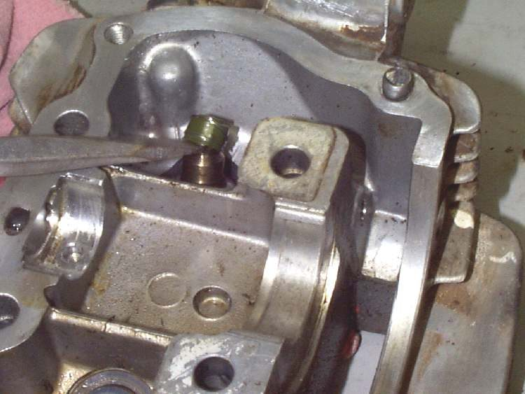
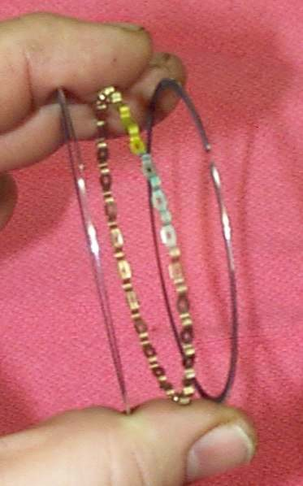
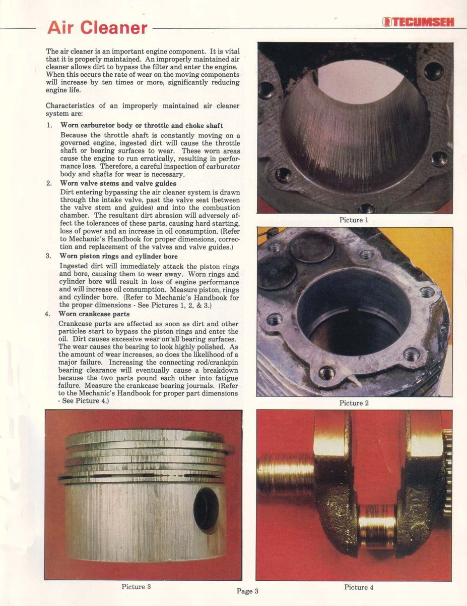

Blue or grey smoke means engine oil is burning in the cylinder. On a four-stroke, oil gets in past worn piston rings, past worn valve guides and stem seals, or because the sump is overfilled. The oil level falls and plugs get oily. On a two-stroke, light blue smoke is normal because oil is burned with the fuel; heavy smoke means too much oil or a fault in the oil pump or crankcase seals. The K-Light manual calls this "white" smoke in its chart; it is the same fault.
Is it safe to ride?
Yes with care. Check the oil level often and carry oil. Stop if the oil level is below the lower mark or the engine loses power.
Quick checks first
- Oil level: is it above the upper mark?
- When does it smoke: on acceleration, after idling, all the time?
- Is the spark plug wet with oil?
- Two-stroke: has the premix ratio or pump setting been changed?
Diagnose it step by step
1Confirm it is oil with Diagnose exhaust smoke by colour. Is the card oily, and does the smoke stay when warm?
- No, it clears when warm and drips water: condensation, normal.
- Yes: go to step 2.
2Two-stroke: is the smoke heavy and has oil started dripping from the exhaust?
- Yes: go to Oil dripping from the exhaust (two-stroke) and Check the two-stroke oil pump and lines.
- Four-stroke: go to step 3.
3Is the oil above the upper mark? Check with Check the engine oil level.
- Yes: drain to the correct level. The K-Light chart puts this first. If the level rises again, see Oil smells of petrol or the level rises.
- No: go to step 4.
4Does it smoke most on opening the throttle and under load, and does smoke also come from the oil filler or breather at high revs?
- Yes: worn rings, piston or cylinder (blow-by). Check Check the crankcase breather, then go to step 6.
- No: go to step 5.
5Does it puff smoke after idling or when the throttle is closed (for example going downhill), then clear?
- Yes: valve stem seals or worn valve guides. The K-Light chart points here when filler smoke is absent. Go to step 6.
- No: go to step 6 anyway.
6Do Test engine compression with the wet test.
- Low and rises when wet: rings and cylinder. Go to Assess the top end (cylinder, piston, valves).
- Normal compression: valve stem seals or guides are more likely. Same workshop job, head only.
What happens if you ignore it: oil use rises, plugs foul, the catalytic converter can be damaged, and running low on oil can seize the engine.
Causes, most likely first
| Cause | How to confirm | Fix |
|---|---|---|
| Oil overfilled | Level above upper mark | Check the engine oil level |
| Worn rings or cylinder | Smoke on load, wet test rises | Assess the top end (cylinder, piston, valves) |
| Worn valve stem seals or guides | Smoke after idling, normal compression | Assess the top end (cylinder, piston, valves) |
| Two-stroke oil setting too rich | Heavy smoke, oily exhaust | Check the two-stroke oil pump and lines |
| Blocked breather | Oil in air box | Check the crankcase breather |
| Rings and bore worn early by dirt | Dust inside the intake, scratched bore | Engine wears out early after dirt gets past the air filter |